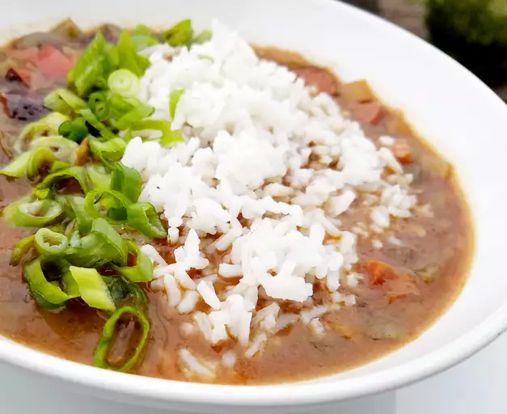

Chicken and Andouille Sausage Gumbo

Description
A tantalising, yet refreshing rendition of gumbo. Enjoy succulent chicken breast dutch oven style, topped with rice and bathed in the most delicious gumbo you've ever tasted.
This chicken and andouille sausage gumbo is a great recipe for those who prefer gumbo without seafood.
Ingredients
- 1 1/2 pounds andouille sausage, sliced
- 4 (5 ounce) boneless, skinless chicken breast halves
- 1/2 cup of canola oil
- 3/4 cup all-purpose flour
- 4 stalks celery, sliced
- 1 large onion, chopped
- 1 medium green bell pepper, chopped
- 6 cloves garlic, minced
- 2 quarts hot chicken broth
- 1 tablespoon Worcestershire sauce
- 2 teaspoons Creole seasoning
- 1 teaspoon dried thyme
- 1 teaspoon red pepper flakes
- 2 bay leaves
- 6 stalks green onions, sliced
- 1 teaspoon gumbo file powder, or to taste
- 2 cups hot cooked rice
Steps
- Cook sausage in a Dutch oven over medium heat, stirring constantly until brownned, about 5 minutes. Remove sausage to a bowl and resever drippings in the Dutch oven.
- Cook chicken in the drippings over medium heat to brown both sides, about 2 1/2 minutes per side. Remove chicken and set aside.
- Heat oil in the Dutch oven. Add flour; cook and stir consatntly over medium heat until roux is thick and the color of chocolate, 20 to 30 minutes. Be careful not to burn or you'll have to start again.
- Add celery, onion, and bell pepper; cook and stir for 6 minutes. Add garlic and cook until fragrant, about 2 minutes longer. Stir in hot broth and bring to a boil.
- Add chicken breasts, Worcestershire sauce, Creole seasoning, thyme, pepper flakes, and bay leaves. Reduce heat and simmer stirring occasionally, until chicken is no longer pink in the center and the juices run clear, about 1 hour. Remove chicken and let cool.
- Add sausage to the gumbo and simmer for 30 minutes
- Shred cooled chicken and add to the gumbo with green onions. Simmer for another 30 minutes
- Remove gumbo from the heat. Discard bay leaves and sprinkle gumbo with file powder. Serve over hot rice.